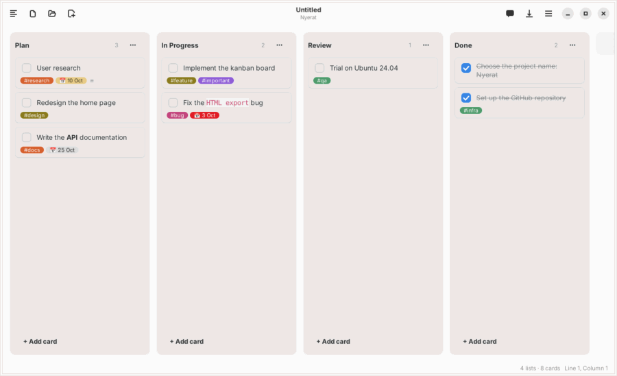
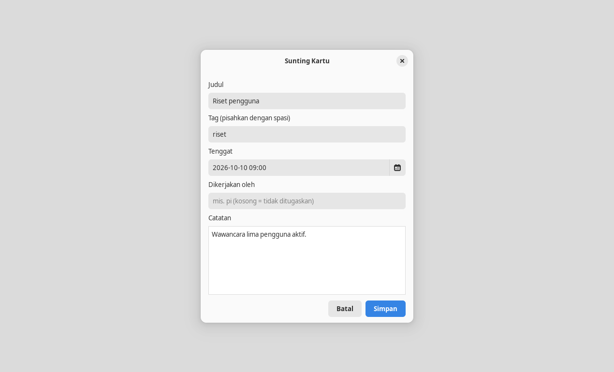

Ruang kerja
Papan kanban
Berkas Markdown dengan kanban: true dibuka sebagai papan. Setiap perubahan ditulis kembali sebagai teks Markdown biasa yang bisa di-diff dan di-commit.

Format berkas
---
kanban: true
---
## Rencana
- [ ] Tulis laporan #penting @{2026-10-20}
catatan kartu (baris yang diindentasi)
- [ ] Kirim undangan
## Selesai
- [x] Pesan tempat- Heading
##menjadi daftar, item- [ ]menjadi kartu,[x]berarti selesai. - Baris yang diindentasi di bawah kartu adalah catatannya.
#tagtampil sebagai label berwarna;@{2026-10-20}sebagai tanggal tenggat, merah bila lewat batas.- Penanda
kanban-plugin:dari plugin Kanban Obsidian tetap dikenali, dan hal yang tidak dikenali dipertahankan apa adanya.
Membuat papan
- Menu ☰ → Papan Kanban Baru membuat papan kosong yang belum bernama.
- Klik kanan di pohon berkas → Papan Kanban Baru… langsung membuatnya sebagai berkas di folder itu, berisi daftar Rencana, Dikerjakan, dan Selesai.
- Ctrl+Shift+B beralih antara tampilan papan dan teks.
Bekerja dengan kartu
- Seret kartu antar daftar atau ke posisi lain di daftar yang sama; dekat tepi, papan bergulir otomatis.
- Klik kartu untuk menyunting judul, catatan, tenggat, dan Dikerjakan oleh.
- Tenggat bisa diketik (boleh dengan jam, mis.
2026-10-20 09:00) atau dipilih lewat tombol kalender, dengan Hari ini dan Kosongkan. Memilih tanggal mempertahankan jam yang sudah diketik.

- Klik kanan untuk pindahkan, naik/turun, dan hapus; centang untuk menandai selesai.
[[Catatan]]di judul kartu tampil sebagai tautan yang bisa diklik. Tautan di catatan kartu tampil sebagai baris↗ namadi bawah chip. Kolom catatan di dialog kartu memberi saran nama saat mengetik[[.- Undo dan redo berlaku untuk perubahan di papan.
Papan dan agent
- Agent Nyerat mengubah papan lewat
ubah_kanban: menambah, memindah, menandai, mengubah, atau menghapus kartu dan daftar, selalu lewat jendela tinjau. - Kartu bertanda
@pidikerjakan harness pi di folder proyek lain. Lihat Orkestrator pi. Isi catatan yang ditautkan[[ ]]di kartu ikut masuk prompt pi sebagai konteks.